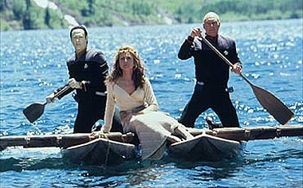
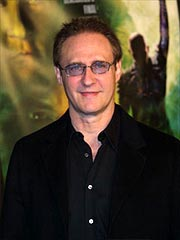
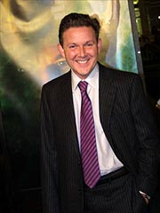
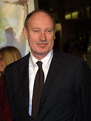
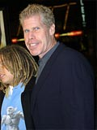
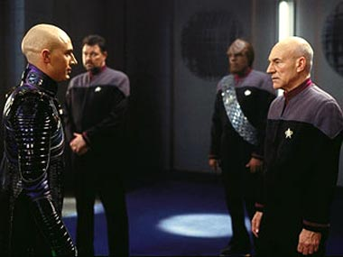

|

Publicado como artigo de
Especiais em janeiro de 2003


|
Os fs brasileiros j puderam conferir pela primeira vez a mais nova (e provavelmente ltima) aventura da Nova Gerao nos cinemas. "Nmesis" (isso mesmo, nada de Jornada nas Estrelas no ttulo) chegou s terras tupiniquins aps um desempenho medocre nos EUA a pior bilheteria de todos os filmes e, ao mesmo tempo, o filme de maior custo. A crtica especializada se dividiu
entre consider-lo um dos melhores filmes de Jornada e um dos piores. Muito se especulou
a respeito da m bilheteria, sugerindo at que o pblico americano
estivesse cansado da franquia, aps mais de 15 anos de exibio ininterrupta de episdios na telinha.  "O que houve de errado?", todos os fs perguntaram. E a resposta simples. Insurreio uma colcha de retalhos que busca repetir situaes de sucesso de filmes anteriores em especial, "Jornada nas Estrelas IV" e "Primeiro Contato" encaixando-as de forma aleatria em um roteiro ruim. Isso fica claro na necessidade de se incluir batalhas espaciais e exploses no que seria, supostamente, uma comdia, e na tentativa de se fazer humor satirizando e humilhando os prprios personagens da franquia. Passagens infames como a espinha de Worf e a cantoria de Picard, Worf e Data deixavam claro que nada do esprito cmico da Srie Clssica fora conseguido no filme. Pior, a premissa do filme em si bastante voltada a trekkers, mas no ao pblico geral. Picard se revolta contra a Frota Estelar. E da? A audincia est mais do que acostumada a personagens rebeldes e que buscam resolver os problemas sob suas prprias diretrizes. Dirty Harry era assim. Mel Gibson em Mquina Mortfera tambm. Pior, Kirk, Sisko e Janeway tambm o eram. Assim, a Paramount errou por acreditar que um filme de Jornada podia fazer sucesso apenas seguindo uma frmula pr-estabelecida, e ignorou o prprio exemplo que pretendia seguir "Jornada IV" no possua vilo, batalhas espaciais e muito menos um capito danando mambo. A grande pergunta, ento, a seguinte: Berman e Cia. conseguiram aprender com este erro? Boatos, confuses e desmentidos  Imediatamente aps o lanamento de Insurreio, comearam os boatos sobre a produo de um novo filme. Ainda em dezembro de 1998, Rick Berman j declarava em entrevistas que estaria discutindo com o estdio a realizao de um novo filme, enquanto Brent Spiner (Data), alardeava seu desejo de que o filme mostrasse a morte de Data.A bilheteria, porm, forou a Paramount a adiar seus planos. Jonathan Frakes, no comeo de 1999, declarava que Patrick Stewart no quer fazer outro filme antes que se passem mais uns trs anos e o estdio sabiamente acredita que ns devemos deixar os novos filmes da srie Guerra nas Estrelas serem lanados antes que tornemos a embarcar na Enterprise. Ns queremos ficar fora do caminho deles. Mas vocs sabem que acabaremos voltando. Ao mesmo tempo, dois outros fatores importantes aconteciam nas telinhas. Em primeiro lugar, Deep Space Nine chegava ao fim aclamada pela crtica especializada como a melhor srie de Jornada nas Estrelas, mas desprezada pelo grande pblico, enquanto Voyager seguia com ndices de audincia baixos e crticas e desgosto por parte de fs e crticos. Muitos comeavam a considerar a possibilidade de que a franquia de Jornada estivesse se esgotando, devido a uma exposio excessiva. Outros, que Rick Berman e Cia. j haviam esgotado seu potencial, e que uma nova equipe deveria ser contratada para injetar sangue novo na marca. Neste nterim, enquanto um anncio oficial no surgia, todo o tipo de boatos e especulaes agitavam a internet, e mesmo a Paramount. Em junho de 1999, executivos da Paramount alardeavam de que, no novo filme, a srie seria reinventada, o que levou a muitos fs a acreditarem que o novo filme seria composto por uma tripulao mista (A Nova Gerao + DS9), ou mesmo que um elenco totalmente novo seria convocado. A apreenso dos fs aumentou quando Rick Berman declarou estar negociando com o estdio assunto, personagens e programao do novo filme. Ao mesmo tempo, estdio e produtores declaravam que um novo filme no seria lanado antes de 2001. Outros boatos surgidos na poca diziam que: Passaria um bom tempo antes de que alguma informao mais concreta fosse dada isso s aconteceria em meados de 2000. Neste meio tempo, Berman apenas declarava que estava confiante de que seria um filme da Nova Gerao, que estava negociando com um roteirista famoso e trekker, e que as crticas de que os filmes da Nova Gerao eram muito parecidos com episdios de TV eram ridculas. De Roma para Romulus Um roteirista famoso trekker? A Paramount iria, afinal, injetar sangue novo na franquia? Se sim, quem seria este roteirista? Os trekkers do mundo todo coaram a cabea, e por incrvel que parea um nico nome veio mente. E este nome era... Joss Whedon, o criador da srie Buffy, a Caa-Vampiros. Wheadon, ento, era um nome em alta, e estava cotado para escrever o roteiro do segundo filme dos X-Men o que criaria um vnculo entre ele e Patrick Stewart.  O tempo passava, e a Paramount no vinha a pblico trazer informaes mais concretas. Em 5 de julho de 2000, finalmente, era anunciado o nome do roteirista do dcimo filme de Jornada John Logan, aclamado roteirista de filmes como Gladiador, Morcegos e RKO 281. Um novo elemento estava sendo embutido na franquia seria o bastante?John, eu acredito, sabe mais sobre Jornada do que eu. Ele possui todos os episdios em vdeo, declarou Berman, ao ser inquirido sobre a contratao de Logan. Ns temos, em minha opinio, o melhor vilo de Jornada desde Khan. Com o anncio do roteirista, a produo do filme em si foi confirmada, inicialmente programando a sua estria para novembro de 2001. Ao mesmo tempo, informaes e mais informaes chegavam tona: o filme seria estrelado pelo elenco da Nova Gerao, em sua ltima aventura, e que no filme haveria uma participao substancial dos... Romulanos. Isso mesmo. Apesar de serem personagens marcantes tanto na Srie Clssica quanto na Nova Gerao, os Romulanos nunca haviam recebido um papel de destaque nos filmes. Esta era a sua hora. Este vilo citado por Berman seria Romulano? Pedao por pedao, detalhes da trama em construo acabavam vazando para a internet. O primeiro deles mencionava que o filme teria a cloanagem como um dos seus temas. Ao mesmo tempo, os boatos mais absurdos continuavam a circular, incluindo um que garantia que neste filme seria vista a morte de Picard. Outro, que Spock seria o citado grande vilo da trama, boato este que incitou fria entre os trekker mais fervorosos (J no basta terem matado Kirk?). Outros boatos diziam que o nome do vilo seria Shinzon, um clone de Picard, e que Data encontraria um andride similar a ele, chamado B-9. Enquanto isso, o produtor Rick Berman revelou que o ator Brent Spiner, que interpreta o personagem Data nesta srie, tem grande participao na elaborao da trama do novo filme: "Brent tem se envolvido bastante com a histria deste filme. Ele e John [Logan] sempre quiseram trabalhar juntos em um projeto, e Brent tem mantido uma tima participao neste processo". Ao mesmo tempo, algumas declaraes da equipe responsvel pelo filme comeavam a lembrar o histrico de Insurreio, tais como o de John Logan, que em meados de 2001 afirmava ter sido fortemente inspirado pelo filme A Ira de Khan na construo da trama. "Esperem a, no haviam dito algo semelhante na produo do 'Insurreio'?" E ento... o roteiro do filme chega internet. Primeiro, atravs de comentrios de pessoas que supostamente o haviam lido. Depois como havia acontecido no filme anterior o prprio roteiro acabou sendo disponibilizado. E este roteiro mostrava que... o filme era muito mais parecido com "Insurreio" do que qualquer outra coisa o roteiro era uma colcha de retalhos que busca repetir situaes de sucesso de filmes anteriores em especial, "Jornada nas Estrelas II" encaixando-as de forma aleatria em um roteiro ruim, com tentativas de se fazer humor satirizando e humilhando os prprios personagens da franquia. Passagens infames como a em que Worf retratado como se estivesse com medo da velocidade na qual Picard dirigia um jipe (!) deixavam isso claro. Assim, antes mesmo de comearam as filmagens, os fs comearam a ficar temerosos pelo resultado final. A Paramount, oficialmente, no comentou tal roteiro, mas Patrick Stewart e Michael Dorn foram a pblico dizer que o roteiro era bom, e que os fs no deviam acreditar em tudo o que estava sendo comentado. Produo Tentando prender o gnio na garrafa  Enquanto os fs estavam temerosos, a Paramount anunciava o nome do diretor do filme, e este tambm um novato em Jornada: Stuart Baird, responsvel pelo mediano U.S. Marshals. Sangue novo, mas do tipo certo para Jornada?O elenco principal assinava seus contratos, e os personagens adicionais iam ganhando rostos: o ator britnico Tom Hardy era contratado para interpretar Shinzon, o vilo do filme. A idade e nacionalidade do ator sugeriam que afinal Picard encontraria seu clone. Outros nomes incluam Dina Meyer no papel de uma capit Romulana, Ron Perlman e Steven Culp.
 Com o elenco a bordo, as filmagens
comearam em 26 de novembro de 2001. As primeiras cenas apresentavam Picard, Worf e Data envolvidos em alguma atividade no deserto cena que estava includa no roteiro divulgado na internet!  O "Chicago Tribune" deu ao filme 2 1/2 estrelas (sendo 4 o mximo) e disse que facilmente superior ao anterior, "Insurreio". O crtico do peridico gostou da relao pai e filho de Picard e seu clone Shinzon e elogiou a atuao de ambos. Ainda disse que o filme tem a carga emocional muito prxima de "Jornada nas Estrelas II - A Ira de Khan" e teceu elogios aos efeitos especiais e sequncias de ao. Anti-clmax Em 13 de dezembro de 2002, aps uma abstinncia de quatro anos, um novo filme de Jornada estreava, sob a expectativa dos fs e do estdio. E seu desempenho na estria foi... decepcionante. "Nmesis" levou um ms para ultrapassar a marca dos 40 milhes de dlares nos Estados Unidos, mas isso no foi fcil. At agora, o dcimo filme de Jornada teve um retorno de US$ 42.836.840, o que reduz as chances de alcanar a marca dos 50 milhes dentro dos Estados Unidos. Isso confirmaria as expectativas de que este seja o filme trekker de menor arrecadao de todos os tempos, perdendo at mesmo para o fraco "Jornada nas Estrelas V - A ltima Fronteira", que em 1989 conseguiu apenas US$ 52 milhes. Com o trmino da onda de otimismo, e um p caludo na realidade, Rick Berman admitiu que o futuro dos filmes da franquia incerto. "No h meio de dizer o que aconteceu", disse Berman. "Estou convencido de que fizemos um filme muito bom, e tambm estou convencido de que o filme foi promovido adequadamente. Eu achei os trailers e os comerciais de TV todos excelentes. fcil pr a culpa nessas coisas, mas eu no acho que possamos neste caso. Eu acho que a competio de outros filmes pode ter tido alguma responsabilidade, mas no posso estar certo disso tambm. muito, muito difcil dizer." O produtor est desapontado. "Claro, voc quer que um filme v bem", ele disse. "Voc trabalha por um bom tempo, e voc trabalha por um bom tempo, e se no vai bem no legal." Berman conclui dizendo que no sabe qual ser o futuro para a franquia de filmes de Jornada. "H uma teoria de que passou muito tempo [entre 'Insurreio' e 'Nmesis']. H outra teoria de que no passou tempo suficiente. Eu, junto com o pessoal da Paramount, preciso de alguns meses de perspectiva pensando sobre isso para ento decidir sobre qual a melhor coisa a fazer a seguir. Eu no acho que isso seja como cair de um cavalo, e voc quer saltar logo de volta para ele. Mas veremos." Patrick Stewart disse que est decepcionado com a resposta dos fs ao novo episdio da franquia espacial. Ele esperava que os trekkers comparecessem com mais freqncia ao cinema para ver o dcimo episdio de Jornada. "Eu acreditava que haveria uma reao mais positiva ao tema do nosso filme. Talvez isso seja porque o mundo real se tornou perigoso demais para ns", disse. E a aproveitou para soltar uma farpa para a concorrncia: "A Terra-Mdia ou Hogwarts parecem bem mais atrativos e mais reconfortantes nos dias de hoje". "Nmesis": fracasso de bilheteria merecido, ou um bom filme que passou despercebido do grande pblico? Confira a resposta na srie de artigos que o Trek Brasilis publicou sobre o filme. E faa sua prpria anlise em nosso Frum. |